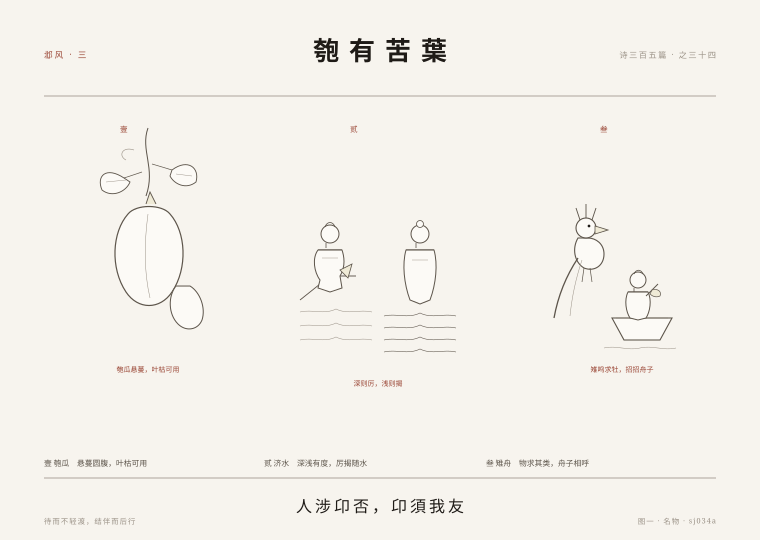
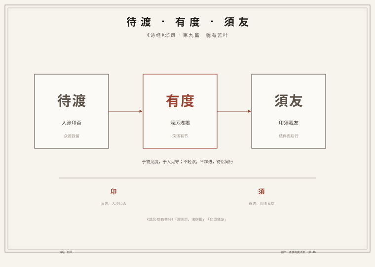

第三十四篇 匏有苦叶
邶风 · 之三 SJ034
朗读 · 普通话
依经文正文朗读，句读从文；不配乐、不改速、不加拖腔。全库同一音色（豆包 TTS），非播音员录制。
一 解题
诗三判：
- 谁在说：一个临水待渡、不肯躁进的人（一说守礼待婚的女子）。四章从物上起笔：匏瓜、济水、雉鸣、舟子，处处是水边光景，处处是分寸。
- 说什么事：匏瓜叶枯，济水有深浅可涉；水深就连衣而过，水浅就撩衣而渡。济水满盈，雌雉鸣叫；水满只沾车轴，雉鸣自求其偶。雁声和鸣，朝阳初明；娶妻要趁冰尚未泮。船夫招招手，别人渡河我不渡——别人渡河我不渡，我是在等我的同伴。
- 为何编在此：前几篇写怨、写思、写役，此篇写「待」。礼失之世，人最容易失分寸；此篇以水喻渡，深浅有度，结伴而后行，是邶风一卷里少见的审慎自持。
《毛序》：「《匏有苦叶》，刺卫宣公也。公与夫人并有淫乱之行，故国人刺之。」——汉人以美刺系之卫宣公，以为刺淫。
朱子《诗集传》：「此诗疑亦前篇妇人所作。盖其夫既归，不以行媒、不告于庙而留己于外，己以礼守正，不往而待其成也。」——朱子从妇人守正待夫一边读。
本库的看法：这首诗的骨在四章皆以物起——匏、济、雉、舟——写一个「待」字，而「不轻渡」。
水深水浅，各有涉法；人来人往，我独留待。不是过不去，是不肯冒失过去；不是没有人，是要等一个该同渡的人。毛序刺淫、朱子待夫，皆从一端切入；本库取文本自证的一读：于物见度，于人见守。
二 经文
第一章
匏有苦葉，濟有深涉。深則厲，淺則揭。
第二章
有彌濟盈，有鷕雉鳴。濟盈不濡軌，雉鳴求其牡。
第三章
雝雝鳴雁，旭日始旦。士如歸妻，迨冰未泮。
第四章
招招舟子，人涉卬否。人涉卬否，卬須我友。
分章：毛传、朱子皆四章，章四句。一章匏、济起兴；二章济盈、雉鸣；三章雁鸣、旭日，及冰未泮；四章舟子招招，落到「须我友」。前三章写物之时与度，末章落到人之待与守。
三 韵读
| 一 |
葉、涉（葉部）；厲、揭（祭部） |
葉部／祭部 |
| 二 |
盈、鳴（耕部）；軌、牡（幽部） |
耕部／幽部 |
| 三 |
雁、旦、泮（元部）；妻（脂部） |
元部／脂部 |
| 四 |
否、否、友 |
之部 |
一章葉部入声短促，像涉水探足；祭部平舒，度深浅；二章耕部高扬写水满雉鸣，幽部沉收落到牡偶；三章元部开阔写雁去天晓，脂部轻收归到「妻」字；四章之部长而缓，正是等人的声调。全篇落脚声是「卬须我友」——等同伴，一起渡。
四 字义与名物
- 匏——葫芦。硕大而腹空，古系于腰可渡水；苦叶，叶枯而味苦，时至则瓤可用。不是「苦瓠无用」。
- 苦葉——叶枯味苦。
- 濟——济水；深涉，深水可涉之处。
- 厲——连衣涉水。一说以匏系腰而渡。不是「严厉」「砥砺」。
- 揭——撩起衣裳。不是「揭开」「高举」。
- 彌——水满盈之貌。
- 鷕（yǎo）——雌雉鸣声。
- 濡——沾湿。
- 軌——车轴头。一说车辙。
- 牡——雄雉。
- 雝雝（yōng yōng）——雁鸣声和。
- 旭日始旦——朝阳初明，天刚亮。
- 歸妻——娶妻、迎娶。
- 迨（dài）——及、趁。
- 泮——冰解、泮散。
- 招招——舟子招手相呼之貌。
- 舟子——船夫。
- 卬（áng）——我。
- 須——等待。
五 今译
第一章
葫芦挂着枯叶，济水有深水可涉。水深就连衣过去，水浅就撩衣过去。
第二章
济水满满地涨着，雌雉喈喈地叫。水涨也只沾湿车轴，雉鸣是在寻找它的雄偶。
第三章
雁声和鸣，朝阳刚明。男子如果要娶妻，要趁冰还没有化开。
第四章
船夫招招手，别人渡河我不渡。别人渡河我不渡，我是在等我的同伴。
译注：「厉」译连衣涉水；「揭」译撩衣；「轨」译车轴头；「归妻」译迎娶；「迨」译趁；「泮」译冰解；「卬」译我；「须」译等待。
六 章旨
一章：以匏济起度深浅。匏可渡水，水有深浅；涉法随水而变。
二章：物各求其类。水盈不濡轨，雉鸣求牡；物知其时、知其偶。
三章：时不可失，礼不可紊。旭日雁鸣，娶妇待冰未泮，取时序之正。
四章：独留待友。舟子招呼，众皆涉，我不涉；所待者，同行之友。
前三章一层一层铺「物之时与度」：匏有时，水有度，雉有偶，雁有时；末章忽然转到人——众人皆渡而我否，不是逆众，是要结伴而后行。物有深浅之度，人有同行之待；此即本卷「礼失而心不甘」中，尚守分寸的一读。
七 诗教
- 赋：四章皆即物即事，赋而兼兴；匏、济、雉、雁、舟子，皆眼前实景。
- 观：可观一「度」。深浅有节，厉揭随水；观人处事，亦当如涉水，量深浅而后动。
- 群：所重在「我友」。渡必结伴，行必与俱；一人不独涉，是群道之始。
- 怨：无怨。不怨水、不怨人、不怨舟子招呼；只有审慎与等待，躁进之念不起。
八 分寸与边界
- 不可把「厉」解作「严厉」「砥砺」。厉是连衣涉水，与「揭」对举，是两种涉法。
- 不可把「揭」解作「揭开」「高举」。揭是撩起衣裳，水浅则可撩，水深则不可。
- 不可把「匏有苦叶」读成叹瓠苦无用。匏本是渡水之具，叶枯时至，正说可用。
- 不可把「雉鸣求其牡」解成人求偶的直陈。物自求其类，是适时之喻，不是诗中之人自道。
- 不可把「卬须我友」读作怨友不来。须是等待，是审慎结伴；语气是留待，不是责人。
九 存疑
- 作诗之人：毛序系刺卫宣公淫乱；朱子以为妇人守正待夫；一说士女临水相会之诗。本库取「待而不轻渡」之读，不坐实淫刺，亦不坐实夫妇。
- 「厉」之解法：一说连衣涉水，一说以匏系腰而渡，一说不脱衣而涉。本库从连衣涉水。
- 「轨」：车轴头一说，车辙一说。本库从轴头，取「濡轨」即水不及轴之上。
- 「归妻」：娶妻一说，出嫁一说。本库从迎娶，与「迨冰未泮」古礼初婚之期相合。
- 「招招」：招手相呼一说，舟行摇动一说。本库从招手，与舟子呼渡之景相合。
十 跨典
- 《郑风·褰裳》「子惠思我，褰裳涉溱」——同为涉水之喻；彼以戏言涉溱，此以审慎待渡，两诗对读，躁与守自见。
- 《周易·需卦》「需于沙，小有言，终吉」「需于泥，致寇至」——待而不进之义；需者须也，与「卬须我友」同取等待。
- 《礼记·坊记》「《诗》云：『先事后禄，其昉之谓与？』」——礼贵待成；此篇「迨冰未泮」，正是待时成礼。
- 《邶风·简兮》「云谁之思？西方美人」——同卷写期待与系念；彼思其人，此待其侣。
- 《大雅·棫朴》「周王于迈，六师及之」——行必与众俱；待众而后行，与此篇结伴而渡同旨。
十一 双卡与图
双卡五对：
| 厲（连衣涉水） |
严厉（误训） |
| 揭（撩衣） |
揭开（误训） |
| 匏（渡水之具） |
苦瓠无用（误读） |
| 卬（我） |
仰（误读） |
| 待而不轻渡 |
躁进而渡 |

图一 · 匏瓜·济水深浅·雉鸣舟子 名物图

图二 · 待渡—有度—须友 义理图
读图三处：
- 匏画腹、蒂、蔓三处：葫芦识别在圆腹、长蒂与悬蔓；名物图不画整株藤，只取瓜实与垂蔓。
- 济水分深浅两道：近岸浅水画撩衣涉者，远水深水画连衣涉者；水纹两道，一疏一密，见厉揭之度。
- 义理三格以「须友」收尾：待渡—有度—须友，箭头由水之度及人之守；末尺标出「卬」「须」，见留待而不躁进。